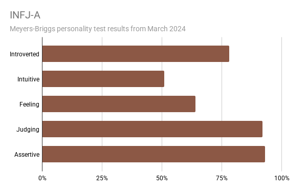
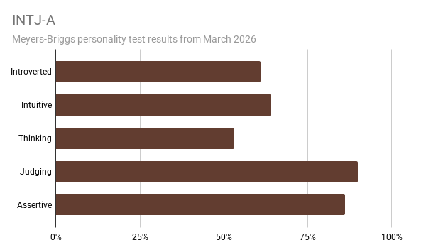

I operate on a foundational principle: Automation is for Information, but Human Interpretation is for Action. In my work, I aim to bridge the gap between technical data science and executive strategy by architecting a culture of informed action.
Personality Assessment: 2024 vs. 2026
I view self-awareness as a continuous journey. Every few years, I revisit the Myers-Briggs personality framework to see how my motivations and values have shifted alongside my career. It’s a fascinating way to track my growth—moving from a focus on idealistic, empathetic connection to a more strategic, analytical approach to problem-solving.


Key Changes in My Traits:
- From Empathy to Logic: My "Nature" trait flipped from 64% Feeling in 2024 to 53% Thinking in 2026. In 2024, I prioritized social harmony and empathy; by 2026, I've moved toward objectivity, effectiveness, and rationality.
- Increased Strategy and Independence: While I have always been highly organized (92% Judging in 2024 and 90% Judging in 2026 ), my 2026 profile emphasizes strategic analysis and pragmatism over 2024’s focus on idealism and insight.
- Strengthened Vision: My "Mind" trait moved from 51% Intuitive to 64% Intuitive. This suggests I am becoming even more focused on hidden meanings, distant possibilities, and abstract, complex ideas.